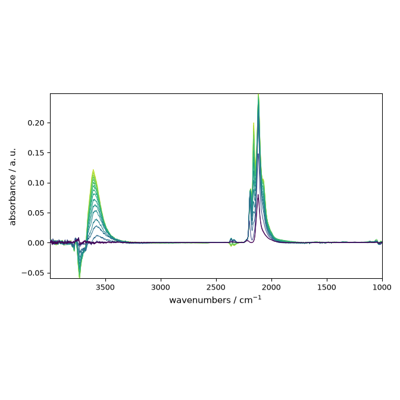
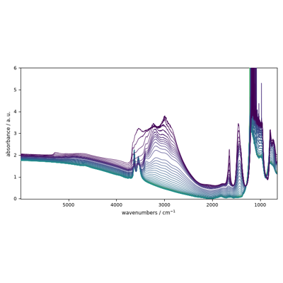
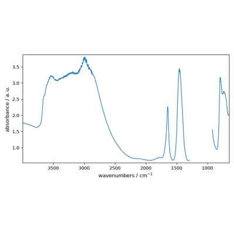
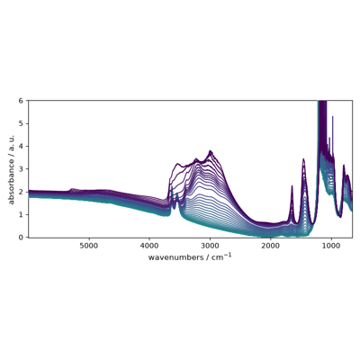

spectrochempy.Coord
- class Coord(data=None, **kwargs)[source]
Explicit coordinates for a dataset along a given axis.
The coordinates of a
NDDatasetcan be created using theCoordobject. This is a single dimension array with either numerical (float) values or labels (str,Datetimeobjects, or any other kind of objects) to represent the coordinates. Only a one numerical axis can be defined, but labels can be multiple.- Parameters
data (ndarray, tuple or list) – The actual data array contained in the
Coordobject. The given array (with a single dimension) can be a list, a tuple, andarray, or a array-like object. If an object is passed that contains labels, or units, these elements will be used to accordingly set those of the created object. If possible, the provided data will not be copied fordatainput, but will be passed by reference, so you should make a copy thedatabefore passing it in the object constructor if that’s the desired behavior or set thecopyargument to True.**kwargs – Optional keywords parameters. See other parameters.
- Other Parameters
dtype (str or dtype, optional, default=np.float64) – If specified, the data will be cast to this dtype, else the type of the data will be used.
dims (list of chars, optional.) – if specified the list must have a length equal to the number od data dimensions (ndim) and the chars must be taken among x,y,z,u,v,w or t. If not specified, the dimension names are automatically attributed in this order.
name (str, optional) – A user-friendly name for this object. If not given, the automatic
idgiven at the object creation will be used as a name.labels (array of objects, optional) – Labels for the
data. labels can be used only for 1D-datasets. The labels array may have an additional dimension, meaning several series of labels for the same data. The given array can be a list, a tuple, andarray, a ndarray-like, aNDArrayor any subclass ofNDArray.units (
Unitinstance or str, optional) – Units of the data. If data is aQuantitythenunitsis set to the unit of thedata; if a unit is also explicitly provided an error is raised. Handling of units use the pint package.title (str, optional) – The title of the dimension. It will later be used for instance for labelling plots of the data. It is optional but recommended to give a title to each ndarray.
dlabel (str, optional) – Alias of
title.linearize_below (float, optional, default=0.1) – variation of spacing in % below which the coordinate is linearized. Set it to
rounding (bool, optional, default=True) – If True, the data will be rounded to the number of significant digits given by
sigdigits.sigdigits (int, optional, default=4) – Number of significant digits to be used for rounding and linearizing the data.
offset (
floatinstance, optional) – The offset of the axis. This is used to generate an evenly values spaced axis together withìncrementandsize.increment (
floatinstance, optional) – The increment between two consecutive values of the axis. This is used to generate an evenly values spaced axis together withoffsetandsize.size (
intinstance, optional) – The size of the axis. This is used to generate an evenly values spaced axis together withoffsetandincrement.
See also
NDDatasetMain SpectroChemPy object: an array with masks, units and coordinates.
Examples
We first import the object from the api :
>>> from spectrochempy import Coord
We then create a numpy
ndarrayand use it as the numericaldataaxis of our newCoordobject :>>> c0 = Coord.arange(1., 12., 2., title='frequency', units='Hz') >>> c0 Coord: [float64] Hz (size: 6)
We can take a series of str to create a non-numerical but labelled axis :
>>> tarr = list('abcdef') >>> tarr ['a', 'b', 'c', 'd', 'e', 'f']
>>> c1 = Coord(labels=tarr, title='mylabels') >>> c1 Coord: [labels] [ a b c d e f] (size: 6)
Attributes Summary
Data array (
ndarray).True if the
dataarray is dimensionless - Readonly property (bool).Return the data type.
True if the
dataarray is not empty.True is the name has been defined (bool).
True if the
dataarray have units - Readonly property (bool).Object identifier - Readonly property (str).
True if the
dataarray is empty or size=0, and if no label are present.True if the
dataare real values - Readonly property (bool).True if the
dataare integer values - Readonly property (bool).True if the
dataarray have labels - Readonly property (bool).Laser frequency if needed (Quantity).
Range of the data (list).
Whether the coordinates axis is linear (i.e.
Data array (
ndarray).Data array (
ndarray).Additional metadata (
Meta).A user-friendly name (str).
Whether the axis is reversed.
A tuple with the size of each dimension - Readonly property.
True if axis must discard values and show only datapoints.
Number of significant digits for rounding coordinate values.
Size of the underlying
dataarray - Readonly property (int).Coordinate spacing.
An user-friendly title (str).
The actual array with mask and unit (
Quantity).bool- True if thedatadoes not haveunits(Readonly property).Unit- The units of the data.Alias of
values.Quantity- The actual values (data, units) contained in this object (Readonly property).Methods Summary
amax(dataset[, dim, keepdims])Return the maximum of the dataset or maxima along given dimensions.
amin(dataset[, dim, keepdims])Return the maximum of the dataset or maxima along given dimensions.
arange([start, stop, step, dtype])Return evenly spaced values within a given interval.
around(dataset[, decimals])Evenly round to the given number of decimals.
astype([dtype])Cast the data to a specified type.
copy([deep, keepname])Make a disconnected copy of the current object.
fromfunction(cls, function[, shape, dtype, ...])Construct a nddataset by executing a function over each coordinate.
fromiter(iterable[, dtype, count])Create a new 1-dimensional array from an iterable object.
geomspace(start, stop[, num, endpoint, dtype])Return numbers spaced evenly on a log scale (a geometric progression).
get_labels([level])Get the labels at a given level.
is_units_compatible(other)Check the compatibility of units with another object.
ito(other[, force])Inplace scaling to different units.
Inplace rescaling to base units.
Quantity scaled in place to reduced units, inplace.
linearize([sigdigits])Linearize the coordinate's data.
linspace(cls, start, stop[, num, endpoint, ...])Return evenly spaced numbers over a specified interval.
loc2index(loc[, return_error])Return the index corresponding to a given location.
logspace(cls, start, stop[, num, endpoint, ...])Return numbers spaced evenly on a log scale.
max(dataset[, dim, keepdims])Return the maximum of the dataset or maxima along given dimensions.
min(dataset[, dim, keepdims])Return the maximum of the dataset or maxima along given dimensions.
normal([loc, scale, size, dtype])Return samples from a normal (Gaussian) distribution.
ptp(dataset[, dim, keepdims])Range of values (maximum - minimum) along a dimension.
round(dataset[, decimals])Evenly round to the given number of decimals.
round_(dataset[, decimals])Evenly round to the given number of decimals.
set_laser_frequency([frequency])Set the laser frequency.
to(other[, inplace, force])Return the object with data rescaled to different units.
to_base_units([inplace])Return an array rescaled to base units.
to_reduced_units([inplace])Return an array scaled in place to reduced units.
Attributes Documentation
- data
Data array (
ndarray).If there is no data but labels, then the labels are returned instead of data.
Notes
The data are always returned as a 1D array of float rounded to the number of significant digits given by the
sigdigitsparameters. If the spacing between the data is constant with the accuracy given by the significant digits, the data are thus linearized and thelinearattribute is set to True.
- dimensionless
True if the
dataarray is dimensionless - Readonly property (bool).Notes
Dimensionlessis different ofunitlesswhich means no unit.
- dtype
Return the data type.
- has_defined_name
True is the name has been defined (bool).
- has_units
True if the
dataarray have units - Readonly property (bool).See also
unitlessTrue if the data has no unit.
dimensionlessTrue if the data have dimensionless units.
- id
Object identifier - Readonly property (str).
- is_empty
True if the
dataarray is empty or size=0, and if no label are present.Readonly property (bool).
- labels
An array of labels for
data(ndarrayof str).An array of objects of any type (but most generally string), with the last dimension size equal to that of the dimension of data. Note that’s labelling is possible only for 1D data. One classical application is the labelling of coordinates to display informative strings instead of numerical values.
- laser_frequency
Laser frequency if needed (Quantity).
- limits
Range of the data (list).
- linear
Whether the coordinates axis is linear (i.e. regularly spaced).
- m
Data array (
ndarray).If there is no data but labels, then the labels are returned instead of data.
- magnitude
Data array (
ndarray).If there is no data but labels, then the labels are returned instead of data.
- meta
Additional metadata (
Meta).
- name
A user-friendly name (str).
When no name is provided, the
idof the object is returned instead.
- reversed
Whether the axis is reversed.
- shape
A tuple with the size of each dimension - Readonly property.
The number of
dataelement on each dimension (possibly complex). For only labelled array, there is no data, so it is the 1D and the size is the size of the array of labels.
- show_datapoints
True if axis must discard values and show only datapoints.
- Type
Bool
- sigdigits
Number of significant digits for rounding coordinate values.
Notes
The number of significant digits is used when linearizing the coordinates. It is also used when setting the coordinates values at the Coord initialization or every time the data array is changed.
- size
Size of the underlying
dataarray - Readonly property (int).The total number of data elements (possibly complex in the array).
- spacing
Coordinate spacing.
It will be a scalar if the coordinates are uniformly spaced, else an array of the different spacings.
Notes
The spacing is returned in the units of the coordinate.
- title
An user-friendly title (str).
When the title is provided, it can be used for labeling the object, e.g., axe title in a matplotlib plot.
Methods Documentation
- amax(dataset, dim=None, keepdims=False, **kwargs)[source]
Return the maximum of the dataset or maxima along given dimensions.
- Parameters
dataset (array_like) – Input array or object that can be converted to an array.
dim (None or int or dimension name or tuple of int or dimensions, optional) – Dimension or dimensions along which to operate. By default, flattened input is used. If this is a tuple, the maximum is selected over multiple dimensions, instead of a single dimension or all the dimensions as before.
keepdims (bool, optional) – If this is set to True, the axes which are reduced are left in the result as dimensions with size one. With this option, the result will broadcast correctly against the input array.
- Returns
amax – Maximum of the data. If
dimis None, the result is a scalar value. Ifdimis given, the result is an array of dimensionndim - 1.
See also
aminThe minimum value of a dataset along a given dimension, propagating NaNs.
minimumElement-wise minimum of two datasets, propagating any NaNs.
maximumElement-wise maximum of two datasets, propagating any NaNs.
fmaxElement-wise maximum of two datasets, ignoring any NaNs.
fminElement-wise minimum of two datasets, ignoring any NaNs.
argmaxReturn the indices or coordinates of the maximum values.
argminReturn the indices or coordinates of the minimum values.
Notes
For dataset with complex type, the default is the value with the maximum real part.
- amin(dataset, dim=None, keepdims=False, **kwargs)[source]
Return the maximum of the dataset or maxima along given dimensions.
- Parameters
dataset (array_like) – Input array or object that can be converted to an array.
dim (None or int or dimension name or tuple of int or dimensions, optional) – Dimension or dimensions along which to operate. By default, flattened input is used. If this is a tuple, the minimum is selected over multiple dimensions, instead of a single dimension or all the dimensions as before.
keepdims (bool, optional) – If this is set to True, the dimensions which are reduced are left in the result as dimensions with size one. With this option, the result will broadcast correctly against the input array.
- Returns
amin – Minimum of the data. If
dimis None, the result is a scalar value. Ifdimis given, the result is an array of dimensionndim - 1.
See also
amaxThe maximum value of a dataset along a given dimension, propagating NaNs.
minimumElement-wise minimum of two datasets, propagating any NaNs.
maximumElement-wise maximum of two datasets, propagating any NaNs.
fmaxElement-wise maximum of two datasets, ignoring any NaNs.
fminElement-wise minimum of two datasets, ignoring any NaNs.
argmaxReturn the indices or coordinates of the maximum values.
argminReturn the indices or coordinates of the minimum values.
- arange(start=0, stop=None, step=None, dtype=None, **kwargs)[source]
Return evenly spaced values within a given interval.
Values are generated within the half-open interval [start, stop).
- Parameters
start (number, optional) – Start of interval. The interval includes this value. The default start value is 0.
stop (number) – End of interval. The interval does not include this value, except in some cases where step is not an integer and floating point round-off affects the length of out. It might be prefereble to use inspace in such case.
step (number, optional) – Spacing between values. For any output out, this is the distance between two adjacent values, out[i+1] - out[i]. The default step size is 1. If step is specified as a position argument, start must also be given.
dtype (dtype) – The type of the output array. If dtype is not given, infer the data type from the other input arguments.
**kwargs – Keywords argument used when creating the returned object, such as units, name, title, …
- Returns
arange – Array of evenly spaced values.
See also
linspaceEvenly spaced numbers with careful handling of endpoints.
Examples
>>> scp.arange(1, 20.0001, 1, units='s', name='mycoord') NDDataset: [float64] s (size: 20)
- around(dataset, decimals=0)[source]
Evenly round to the given number of decimals.
- Parameters
dataset (
NDDataset) – Input dataset.decimals (int, optional) – Number of decimal places to round to (default: 0). If decimals is negative, it specifies the number of positions to the left of the decimal point.
- Returns
rounded_array – NDDataset containing the rounded values. The real and imaginary parts of complex numbers are rounded separately. The result of rounding a float is a float. If the dataset contains masked data, the mask remain unchanged.
See also
numpy.round,around,spectrochempy.round,spectrochempy.around,methods.,ceil,fix,floor,rint,trunc
- astype(dtype=None, **kwargs)[source]
Cast the data to a specified type.
- Parameters
dtype (str or dtype) – Typecode or data-type to which the array is cast.
- copy(deep=True, keepname=False, **kwargs)[source]
Make a disconnected copy of the current object.
- Parameters
deep (bool, optional) – If True a deepcopy is performed which is the default behavior.
keepname (bool) – If True keep the same name for the copied object.
- Returns
object – An exact copy of the current object.
Examples
>>> nd1 = scp.NDArray([1. + 2.j, 2. + 3.j]) >>> nd1 NDArray: [complex128] unitless (size: 2) >>> nd2 = nd1 >>> nd2 is nd1 True >>> nd3 = nd1.copy() >>> nd3 is not nd1 True
- fromfunction(cls, function, shape=None, dtype=float, units=None, coordset=None, **kwargs)[source]
Construct a nddataset by executing a function over each coordinate.
The resulting array therefore has a value
fn(x, y, z)at coordinate(x, y, z).- Parameters
function (callable) – The function is called with N parameters, where N is the rank of
shapeor from the providedCoordSet.shape ((N,) tuple of ints, optional) – Shape of the output array, which also determines the shape of the coordinate arrays passed to
function. It is optional only ifCoordSetis None.dtype (data-type, optional) – Data-type of the coordinate arrays passed to
function. By default,dtypeis float.units (str, optional) – Dataset units. When None, units will be determined from the function results.
coordset (
CoordSetinstance, optional) – If provided, this determine the shape and coordinates of each dimension of the returnedNDDataset. If shape is also passed it will be ignored.**kwargs – Other kwargs are passed to the final object constructor.
- Returns
fromfunction – The result of the call to
functionis passed back directly. Therefore the shape offromfunctionis completely determined byfunction.
See also
fromiterMake a dataset from an iterable.
Examples
Create a 1D NDDataset from a function
>>> func1 = lambda t, v: v * t >>> time = scp.Coord.arange(0, 60, 10, units='min') >>> d = scp.fromfunction(func1, v=scp.Quantity(134, 'km/hour'), coordset=scp.CoordSet(t=time)) >>> d.dims ['t'] >>> d NDDataset: [float64] km (size: 6)
- fromiter(iterable, dtype=np.float64, count=-1, **kwargs)[source]
Create a new 1-dimensional array from an iterable object.
- Parameters
iterable (iterable object) – An iterable object providing data for the array.
dtype (data-type) – The data-type of the returned array.
count (
int, optional) – The number of items to read from iterable. The default is -1, which means all data is read.**kwargs – Other kwargs are passed to the final object constructor.
- Returns
fromiter – The output nddataset.
See also
fromfunctionConstruct a nddataset by executing a function over each coordinate.
Notes
- Specify count to improve performance. It allows fromiter to pre-allocate the
output array, instead of resizing it on demand.
Examples
>>> iterable = (x * x for x in range(5)) >>> d = scp.fromiter(iterable, float, units='km') >>> d NDDataset: [float64] km (size: 5) >>> d.data array([ 0, 1, 4, 9, 16])
- geomspace(start, stop, num=50, endpoint=True, dtype=None, **kwargs)[source]
Return numbers spaced evenly on a log scale (a geometric progression).
This is similar to
logspace, but with endpoints specified directly. Each output sample is a constant multiple of the previous.- Parameters
start (number) – The starting value of the sequence.
stop (number) – The final value of the sequence, unless
endpointis False. In that case,num + 1values are spaced over the interval in log-space, of which all but the last (a sequence of lengthnum) are returned.num (int, optional) – Number of samples to generate. Default is 50.
endpoint (bool, optional) – If true,
stopis the last sample. Otherwise, it is not included. Default is True.dtype (dtype) – The type of the output array. If
dtypeis not given, infer the data type from the other input arguments.**kwargs – Keywords argument used when creating the returned object, such as units, name, title, …
- Returns
geomspace –
numsamples, equally spaced on a log scale.
- get_labels(level=0)[source]
Get the labels at a given level.
Used to replace
datawhen only labels are provided, and/or for labeling axis in plots.- Parameters
level (int, optional, default:0) – Label level.
- Returns
ndarray– The labels at the desired level or None.
- is_units_compatible(other)[source]
Check the compatibility of units with another object.
- Parameters
other (
ndarray) – The ndarray object for which we want to compare units compatibility.- Returns
result – True if units are compatible.
Examples
>>> nd1 = scp.NDDataset([1. + 2.j, 2. + 3.j], units='meters') >>> nd1 NDDataset: [complex128] m (size: 2) >>> nd2 = scp.NDDataset([1. + 2.j, 2. + 3.j], units='seconds') >>> nd1.is_units_compatible(nd2) False >>> nd1.ito('minutes', force=True) >>> nd1.is_units_compatible(nd2) True >>> nd2[0].values * 60. == nd1[0].values True
- ito(other, force=False)[source]
Inplace scaling to different units. (same as
towith inplace= True).- Parameters
See also
toRescaling of the current object data to different units.
to_base_unitsRescaling of the current object data to different units.
ito_base_unitsInplace rescaling of the current object data to different units.
to_reduced_unitsRescaling to reduced units.
ito_reduced_unitsRescaling to reduced units.
- ito_base_units()[source]
Inplace rescaling to base units.
See also
toRescaling of the current object data to different units.
itoInplace rescaling of the current object data to different units.
to_base_unitsRescaling of the current object data to different units.
to_reduced_unitsRescaling to redunced units.
ito_reduced_unitsInplace rescaling to reduced units.
- ito_reduced_units()[source]
Quantity scaled in place to reduced units, inplace.
Scaling to reduced units means one unit per dimension. This will not reduce compound units (e.g., ‘J/kg’ will not be reduced to m**2/s**2).
See also
toRescaling of the current object data to different units.
itoInplace rescaling of the current object data to different units.
to_base_unitsRescaling of the current object data to different units.
ito_base_unitsInplace rescaling of the current object data to different units.
to_reduced_unitsRescaling to reduced units.
- linearize(sigdigits=4)[source]
Linearize the coordinate’s data.
Make coordinates with an equally distributed spacing, when possible, i.e., if the spacings are not too different when rounded to the number of significant digits passed in parameters. If the spacings are too different, the coordinates are not linearized. In this case, the
linearattribute is set to False.- Parameters
sigdigits (Int, optional, default=4) – The number of significant digit for coordinates values.
- linspace(cls, start, stop, num=50, endpoint=True, retstep=False, dtype=None, **kwargs)[source]
Return evenly spaced numbers over a specified interval.
Returns num evenly spaced samples, calculated over the interval [start, stop]. The endpoint of the interval can optionally be excluded.
- Parameters
start (array_like) – The starting value of the sequence.
stop (array_like) – The end value of the sequence, unless endpoint is set to False. In that case, the sequence consists of all but the last of num + 1 evenly spaced samples, so that stop is excluded. Note that the step size changes when endpoint is False.
num (int, optional) – Number of samples to generate. Default is 50. Must be non-negative.
endpoint (bool, optional) – If True, stop is the last sample. Otherwise, it is not included. Default is True.
retstep (bool, optional) – If True, return (samples, step), where step is the spacing between samples.
dtype (dtype, optional) – The type of the array. If dtype is not given, infer the data type from the other input arguments.
**kwargs – Keywords argument used when creating the returned object, such as units,
name, title, …
- Returns
linspace (ndarray) – There are num equally spaced samples in the closed interval [start, stop] or the half-open interval [start, stop) (depending on whether endpoint is True or False).
step (float, optional) – Only returned if retstep is True Size of spacing between samples.
- loc2index(loc, return_error=False)[source]
Return the index corresponding to a given location.
- Parameters
loc (float.) – Value corresponding to a given location on the coordinates axis.
- Returns
index (int.) – The corresponding index.
Examples
>>> dataset = scp.read("irdata/nh4y-activation.spg") >>> dataset.x.loc2index(1644.0) 4517
- logspace(cls, start, stop, num=50, endpoint=True, base=10.0, dtype=None, **kwargs)[source]
Return numbers spaced evenly on a log scale.
In linear space, the sequence starts at
base ** start(baseto the power ofstart) and ends withbase ** stop(seeendpointbelow).- Parameters
start (array_like) –
base ** startis the starting value of the sequence.stop (array_like) –
base ** stopis the final value of the sequence, unlessendpointis False. In that case,num + 1values are spaced over the interval in log-space, of which all but the last (a sequence of lengthnum) are returned.num (int, optional) – Number of samples to generate. Default is 50.
endpoint (bool, optional) – If true,
stopis the last sample. Otherwise, it is not included. Default is True.base (float, optional) – The base of the log space. The step size between the elements in
ln(samples) / ln(base)(orlog_base(samples)) is uniform. Default is 10.0.dtype (dtype) – The type of the output array. If
dtypeis not given, infer the data type from the other input arguments.**kwargs – Keywords argument used when creating the returned object, such as units, name, title, …
- Returns
logspace –
numsamples, equally spaced on a log scale.
See also
arangeSimilar to linspace, with the step size specified instead of the number of samples. Note that, when used with a float endpoint, the endpoint may or may not be included.
linspaceSimilar to logspace, but with the samples uniformly distributed in linear space, instead of log space.
geomspaceSimilar to logspace, but with endpoints specified directly.
- max(dataset, dim=None, keepdims=False, **kwargs)[source]
Return the maximum of the dataset or maxima along given dimensions.
- Parameters
dataset (array_like) – Input array or object that can be converted to an array.
dim (None or int or dimension name or tuple of int or dimensions, optional) – Dimension or dimensions along which to operate. By default, flattened input is used. If this is a tuple, the maximum is selected over multiple dimensions, instead of a single dimension or all the dimensions as before.
keepdims (bool, optional) – If this is set to True, the axes which are reduced are left in the result as dimensions with size one. With this option, the result will broadcast correctly against the input array.
- Returns
amax – Maximum of the data. If
dimis None, the result is a scalar value. Ifdimis given, the result is an array of dimensionndim - 1.
See also
aminThe minimum value of a dataset along a given dimension, propagating NaNs.
minimumElement-wise minimum of two datasets, propagating any NaNs.
maximumElement-wise maximum of two datasets, propagating any NaNs.
fmaxElement-wise maximum of two datasets, ignoring any NaNs.
fminElement-wise minimum of two datasets, ignoring any NaNs.
argmaxReturn the indices or coordinates of the maximum values.
argminReturn the indices or coordinates of the minimum values.
Notes
For dataset with complex type, the default is the value with the maximum real part.
- min(dataset, dim=None, keepdims=False, **kwargs)[source]
Return the maximum of the dataset or maxima along given dimensions.
- Parameters
dataset (array_like) – Input array or object that can be converted to an array.
dim (None or int or dimension name or tuple of int or dimensions, optional) – Dimension or dimensions along which to operate. By default, flattened input is used. If this is a tuple, the minimum is selected over multiple dimensions, instead of a single dimension or all the dimensions as before.
keepdims (bool, optional) – If this is set to True, the dimensions which are reduced are left in the result as dimensions with size one. With this option, the result will broadcast correctly against the input array.
- Returns
amin – Minimum of the data. If
dimis None, the result is a scalar value. Ifdimis given, the result is an array of dimensionndim - 1.
See also
amaxThe maximum value of a dataset along a given dimension, propagating NaNs.
minimumElement-wise minimum of two datasets, propagating any NaNs.
maximumElement-wise maximum of two datasets, propagating any NaNs.
fmaxElement-wise maximum of two datasets, ignoring any NaNs.
fminElement-wise minimum of two datasets, ignoring any NaNs.
argmaxReturn the indices or coordinates of the maximum values.
argminReturn the indices or coordinates of the minimum values.
- normal(loc=0.0, scale=1.0, size=None, dtype=None, **kwargs)[source]
Return samples from a normal (Gaussian) distribution.
- Parameters
loc (float, optional) – Mean of the distribution.
scale (float, optional) – Standard deviation of the distribution. Must be non-negative.
size (int or tuple of ints, optional) – Output shape. Default is None, in which case a single value is returned.
dtype (dtype, optional) – Desired dtype of the result. The default is
np.float64.**kwargs – Keyword arguments used when creating the returned object, such as units, name, title, etc.
- Returns
normal – Samples drawn from the normal distribution.
- ptp(dataset, dim=None, keepdims=False)[source]
Range of values (maximum - minimum) along a dimension.
The name of the function comes from the acronym for ‘peak to peak’ .
- Parameters
dim (None or int or dimension name, optional) – Dimension along which to find the peaks. If None, the operation is made on the first dimension.
keepdims (bool, optional) – If this is set to True, the dimensions which are reduced are left in the result as dimensions with size one. With this option, the result will broadcast correctly against the input dataset.
- Returns
ptp – A new dataset holding the result.
- round(dataset, decimals=0)[source]
Evenly round to the given number of decimals.
- Parameters
dataset (
NDDataset) – Input dataset.decimals (int, optional) – Number of decimal places to round to (default: 0). If decimals is negative, it specifies the number of positions to the left of the decimal point.
- Returns
rounded_array – NDDataset containing the rounded values. The real and imaginary parts of complex numbers are rounded separately. The result of rounding a float is a float. If the dataset contains masked data, the mask remain unchanged.
See also
numpy.round,around,spectrochempy.round,spectrochempy.around,methods.,ceil,fix,floor,rint,trunc
- round_(dataset, decimals=0)[source]
Evenly round to the given number of decimals.
- Parameters
dataset (
NDDataset) – Input dataset.decimals (int, optional) – Number of decimal places to round to (default: 0). If decimals is negative, it specifies the number of positions to the left of the decimal point.
- Returns
rounded_array – NDDataset containing the rounded values. The real and imaginary parts of complex numbers are rounded separately. The result of rounding a float is a float. If the dataset contains masked data, the mask remain unchanged.
See also
numpy.round,around,spectrochempy.round,spectrochempy.around,methods.,ceil,fix,floor,rint,trunc
- set_laser_frequency(frequency=None)[source]
Set the laser frequency.
This method is used to set the laser frequency of the dataset. The laser frequency is used to convert the x-axis from optical path difference to time. The laser frequency is also used to calculate the wavenumber axis.
- to(other, inplace=False, force=False)[source]
Return the object with data rescaled to different units.
- Parameters
other (
Quantityor str) – Destination units.inplace (bool, optional, default=`False`) – Flag to say that the method return a new object (default) or not (inplace=True).
force (bool, optional, default=False) – If True the change of units is forced, even for incompatible units.
- Returns
rescaled
See also
itoInplace rescaling of the current object data to different units.
to_base_unitsRescaling of the current object data to different units.
ito_base_unitsInplace rescaling of the current object data to different units.
to_reduced_unitsRescaling to reduced_units.
ito_reduced_unitsInplace rescaling to reduced units.
- to_base_units(inplace=False)[source]
Return an array rescaled to base units.
- Parameters
inplace (bool) – If True the rescaling is done in place.
- Returns
rescaled – A rescaled array.
- to_reduced_units(inplace=False)[source]
Return an array scaled in place to reduced units.
Reduced units means one unit per dimension. This will not reduce compound units (e.g., ‘J/kg’ will not be reduced to m**2/s**2).
- Parameters
inplace (bool) – If True the rescaling is done in place.
- Returns
rescaled – A rescaled array.
Examples using spectrochempy.Coord



Slice an NDDataset with indices and coordinates
Interoperability with xarray and NetCDF

Loading an IR (omnic SPG) experimental file

Choose an explicit plot type for a 2D IR dataset


Mask a saturated region and transform an IR dataset